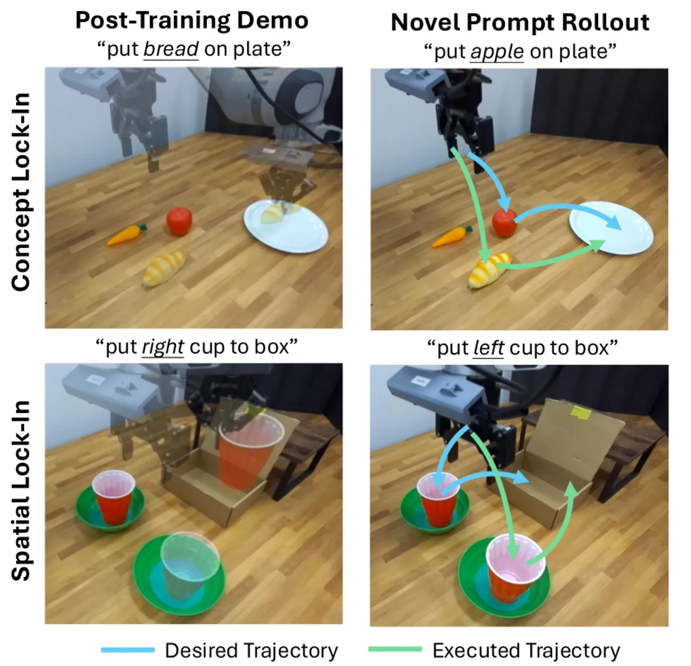
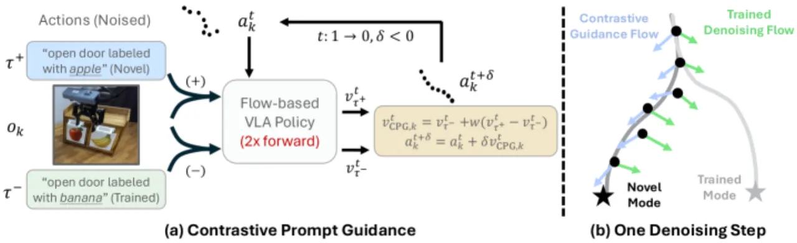
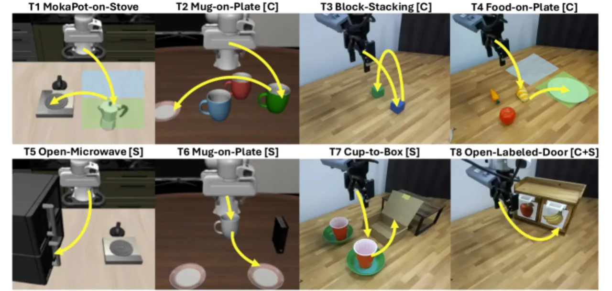
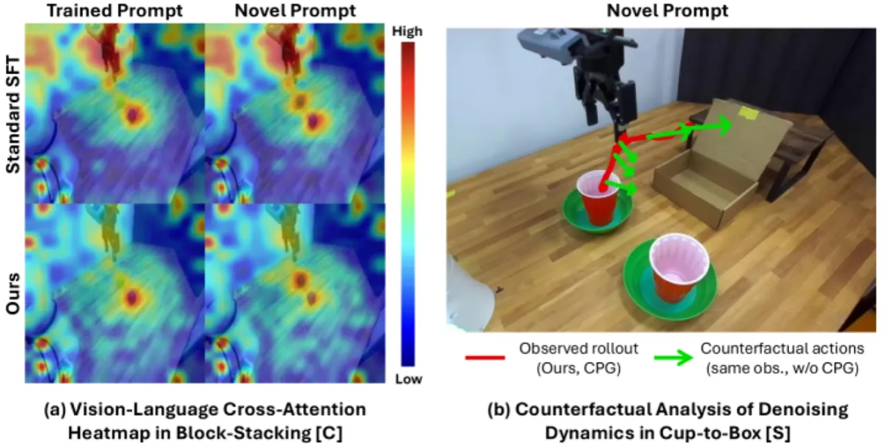
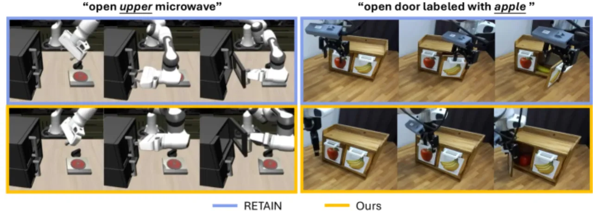

将通用 VLA 策略在少量演示数据上做 post-training 后，模型往往会丧失对新指令的响应能力——这种现象被称为 lock-in（锁死）。DeLock 通过两个轻量机制解决这一问题：在 fine-tuning 阶段用 L2 正则化保护视觉编码器的预训练 grounding 能力，在推理阶段用 contrastive prompt guidance（CPG）将 denoising 轨迹重定向到新指令。在 8 项仿真与真实世界评测中，DeLock 持续超越强基线，且在仅用 80–100 条演示的情况下媲美或超越用大量精标数据训练的 generalist policy。
将一个预训练的通用 VLA 策略在少量演示上做 supervised fine-tuning（SFT），往往会使它 "过拟合" 到训练数据的行为分布，无法正确响应在 post-training 阶段未出现过的新指令。
"Have you ever post-trained a generalist vision-language-action (VLA) policy on a small demonstration dataset, only to find that it stops responding to new instructions and is limited to behaviors observed during post-training?"
作者把这一失效模式命名为 lock-in（锁死），并区分出两种表现形式：
现有的补救手段通常需要额外的监督信号（如来自大型基础模型的奖励、辅助目标），或依赖扩增数据集。但作者指出，预训练 VLA 本身已具备足够的内部知识，无需额外数据即可克服 lock-in。

DeLock 由两个轻量组件构成：训练时的视觉编码器权重漂移正则化，以及推理时的Contrastive Prompt Guidance（CPG）。两者均无需额外标注或数据扩增，只利用预训练模型自身的内部知识。

在标准 SFT 目标 ℒBC 上增加 L2 正则项，约束视觉编码器参数 θv 不偏离预训练权重 θvpre 过远：
ℒDeLock(θ; D★) = ℒBC(θ; D★) + λ‖θv − θvpre‖²₂
语言 backbone 和 action expert 仍通过 LoRA 正常适配。视觉特征是指令 grounding 的核心媒介，编码器漂移是 lock-in 的关键诱因，因此仅对视觉编码器施加约束即可精准干预，同时保留对新任务的学习能力。
推理阶段，CPG 利用 post-training 指令（τ⁻）作为负向提示，novel instruction（τ⁺）作为正向提示，对 denoising vector field 做线性插值引导：
vCPG,kt = vθ(ok, τ⁻, t) + w(vθ(ok, τ⁺, t) − vθ(ok, τ⁻, t))
其中 w ≥ 0 为 guidance scale。CPG 依赖视觉编码器正则化保留的 grounding 能力，在推理时将策略的 denoising 动态"steer"到新指令所指向的行为。
Lock-in 的根本原因在于低数据 SFT 破坏了预训练时建立的视觉-语言对应关系（visual grounding）。视觉编码器正则化在微调中保护这一能力，使模型保有识别新物体/新位置的潜力；CPG 则在推理时进一步利用这种潜力，通过与 post-training 分布的"对比"将动作生成重定向到新指令。两者互补：正则化解决 concept lock-in（concept 理解需要 grounding），CPG 解决 spatial lock-in（空间导航需要实时引导）。
作者构建了一套专门探测 lock-in 失效的 8 任务评测套件，覆盖 LIBERO 仿真（4 任务，每任务 100 条演示）和 DROID 真实世界（4 任务，每任务 80 条演示），任务按失效类型标记为 [C]（concept）、[S]（spatial）或 [C+S]（复合）。每项任务评测 20 次试验（20 trials）。

下表展示各方法在 OOD（out-of-distribution）prompt 下的成功次数，共 8 个任务（T1–T8），其中 T1 为基础参照，T2–T4 为 concept lock-in 任务，T5–T7 为 spatial lock-in 任务，T8 为 concept+spatial 复合任务。
| Method | T1 | T2 [C] | T3 [C] | T4 [C] | T5 [S] | T6 [S] | T7 [S] | T8 [C+S] |
|---|---|---|---|---|---|---|---|---|
| RETAIN | 10/20 | 0/20 | 6/20 | 3/20 | 0/20 | 0/20 | 2/20 | 1/20 |
| π₀.₅-DROID（大规模数据基线） | 18/20 | 18/20 | 18/20 | – | – | 11/20 | 0/20 | – |
| DeLock w/o CPG | 16/20 | 17/20 | 18/20 | 15/20 | 0/20 | 0/20 | 0/20 | 0/20 |
| DeLock w/o Vis-Reg | 4/20 | 9/20 | 7/20 | 2/20 | 0/20 | 0/20 | 0/20 | 0/20 |
| DeLock w/ Frozen-Vis | 7/20 | 16/20 | 14/20 | 13/20 | 2/20 | 11/20 | 8/20 | 4/20 |
| DeLock（完整） | 16/20 | 19/20 | 19/20 | 17/20 | 11/20 | 13/20 | 14/20 | 13/20 |
DeLock 在全部 8 项 OOD 任务上均大幅领先 RETAIN，并在多项任务上媲美或超越大规模数据基线 π₀.₅-DROID——后者使用了远多于 80–100 条的精标演示。


当前评测聚焦于受控的低数据 setting，post-training 指令覆盖范围有限，且 CPG 依赖预先定义好的 contrastive prompt 对（τ⁺ / τ⁻）。对于开放域指令分布、长时域任务或大规模多样化数据的扩展性尚未验证。（论文明确陈述）
Contrastive Prompt Guidance 需要在推理时指定代表 "post-training 固化行为" 的负向提示 τ⁻。在实际部署中，如何自动化地确定合适的 τ⁻ 尚需进一步研究。（根据方法设计推断）
L2 正则化系数 λ 和 guidance scale w 目前采用相对简单的固定设计。如何在不同 VLA 架构和任务上自适应调整这两个超参，尚待进一步研究。（论文明确陈述）
所有评测任务均为单步或短时域操作。在需要多步规划和动态开放环境中，lock-in 的表现形式及 DeLock 的有效性仍有待探索。（论文明确陈述）